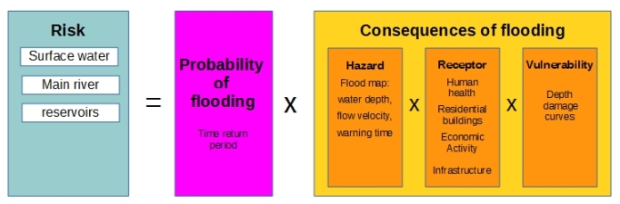
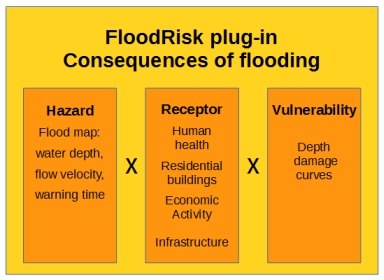

Welcome to FloodRisk’s documentation!¶

FloodRisk¶
What is FloodRisk ?
FloodRisk is a QGIS plugin that provides the assessment of flood consequences, in terms of loss of life and direct economic damages.
The term RISK : Risk = (Probability) x (Consequences)
FloodRisk deals with the assessment of the consequences
